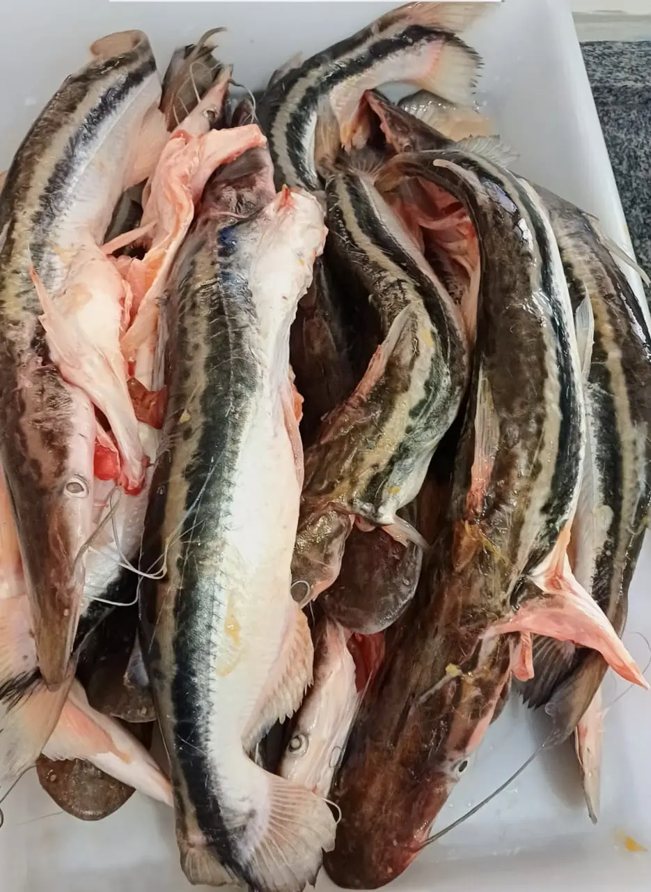
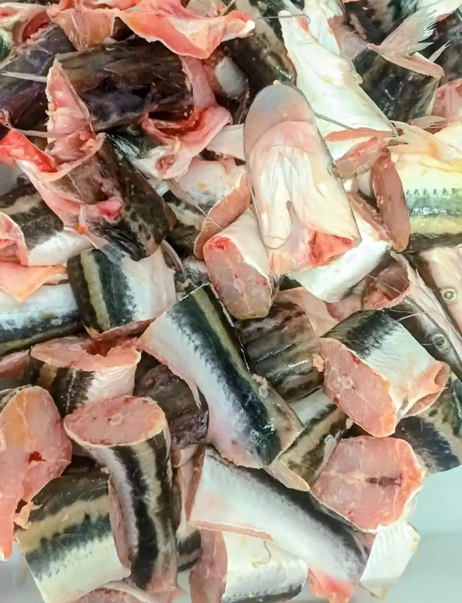

Jurupensem
Sorubim lima
Escolha o Corte:
Retire na loja: R. Bom Jardim, 379 — Centro, Cáceres.
Jurupensem: O Peixe de Couro Liso das Águas do Rio Paraguai
O Jurupensem é um peixe de couro liso muito apreciado nas águas do Rio Paraguai e em toda a bacia do Pantanal mato-grossense. Assim como o Pintado e o Peixe Palmito, ele pertence ao grupo dos siluriformes — peixes sem escamas —, o que facilita o processamento e o manuseio na cozinha. Sua pele lisa e escura, aliada a uma estrutura corporal robusta, faz dele um peixe relativamente fácil de limpar e preparar, tanto inteiro quanto em postas. Por se adaptar bem a diferentes profundidades do rio, ele é capturado com certa regularidade pelos pescadores profissionais que abastecem nossa loja diretamente das margens do Paraguai.
A carne do Jurupensem é firme, levemente rosada e de sabor pronunciado — características que o tornam ideal para caldos encorpados, moquecas e ensopados de panela de barro. A textura densa suporta bem longos cozimentos sem desfiar, preservando a forma das postas e absorvendo com maestria os temperos regionais. Alho amassado, urucum, pimenta-de-cheiro e coentro fresco são combinações clássicas da culinária pantaneira que realçam ao máximo o sabor natural desse peixe. Para quem aprecia um caldo fumegante servido na tigela funda, o Jurupensem em postas grossas é uma das melhores escolhas do cardápio regional.
Na Peixaria Rio Paraguai, o Jurupensem é disponibilizado inteiro — limpo e eviscerado — ou já cortado em postas para maior praticidade no preparo. Por ser um peixe de rio sujeito à sazonalidade e ao período de piracema, recomendamos confirmar disponibilidade pelo WhatsApp antes de vir até a loja. Trabalhamos sempre com pescado de procedência responsável, dentro dos períodos e limites estabelecidos pelos órgãos ambientais, para garantir que essa espécie continue presente no Rio Paraguai para as futuras gerações.